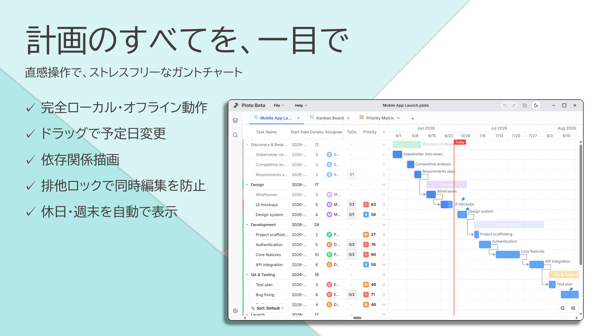

プロジェクト管理を、
もっと直感的に、美しく。
Ploto（プロト）は、ガントチャート、カンバン、優先度マトリクスを一つの美しいインターフェースに統合した、ローカルファーストのプロジェクト管理ツールです。SQLiteによる高速動作と、抜群 of プライバシー保護を実現します。

プロジェクト管理を加速する強力な機能
Plotoは使いやすさと高い機能性を両立するために設計されています。
健康度アラートライン
タスクの進行状況を「期限超過（赤）」「開始遅延（オレンジ）」「正常（緑）」の3色で左端にライン表示。対応が必要なタスクが一目でわかります。
祝日・週末のカスタマイズ表示
独自の祝日データをインポート・追加可能。週末の減色表示や祝日ハイライトにより、現実に即した稼働スケジュールを視覚化します。
無限の Undo / Redo
タスクのドラッグ、情報の追加、削除など、あらゆる操作を無制限に元に戻す・やり直す（Ctrl+Z / Y）ことができます。
プライバシー重視の SQLite 設計
データはすべてローカルの安全なSQLiteファイル（.ploto）に保存。インターネット環境不要で、プライベートなデータがクラウドに漏洩する心配はありません。
実際に動かしてみましょう
ダウンロード前に、Plotoの代表的なインターフェース（ガントチャート、カンバン、マトリクス）の操作性を体験してください。
タスクをマトリクスに追加
ベータ期間中に作成されたファイルは
将来もずっと追加料金なしで利用可能！
Plotoは現在、品質向上のためのベータテストを行っています。将来的に高度な機能を備えた有料プランを導入する予定ですが、ベータ期間中に作成されたプロジェクトファイル（.ploto）は、有料化後もすべての機能を無料で引き続きご利用いただけます。
ベータ版フィードバック送信
バグ報告、機能のご要望、ご感想などをお寄せください。
Plotoでプロジェクト管理をシンプルに
今すぐアプリケーションをダウンロードして、ローカルファーストで快適なプロジェクト管理を開始しましょう。
* Windows 10/11 対応。SQLite 3標準搭載。